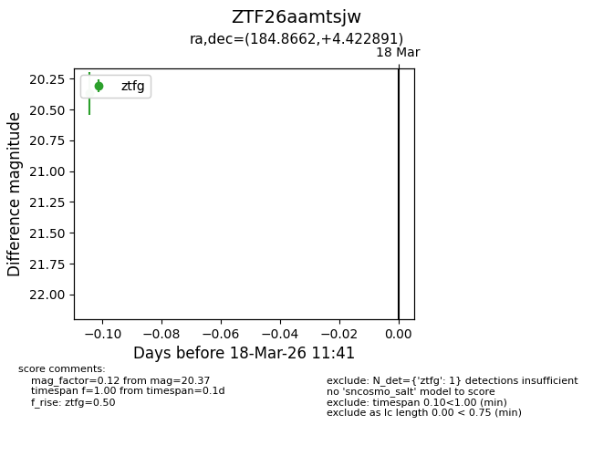
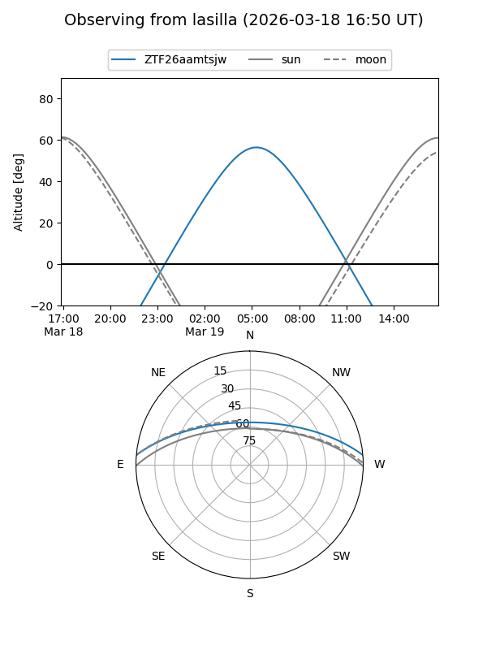
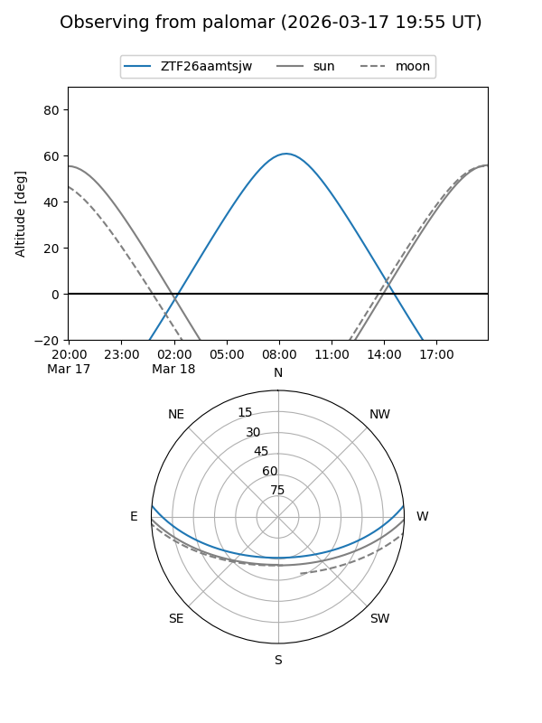

ZTF26aamtsjw
Target ZTF26aamtsjw at 2026-03-18 11:43
Aliases and brokers:
FINK: link
Lasair: link
ALeRCE: link
alt names
ZTF26aamtsjw (ztf,fink_ztf)
Coordinates:
equatorial (ra, dec) = 184.8662,+4.42289
equatorial (HMS+DMS) = 12:19:27.88,+04:25:22.41
galactic (l, b) = (282.9636,+66.04729)
Flags:
Photometry:
last ztfg=20.37
1 ztfg detections
Lightcurve

Visibility


Additional plots